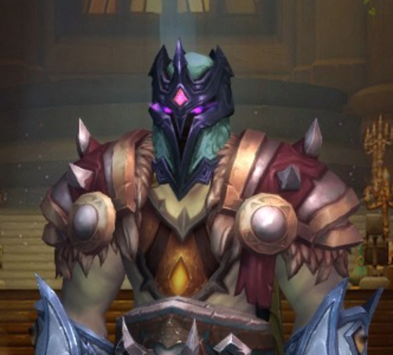

I began my life as a coder/hacker way back at the early age of 8 years old. Our local school had some old green screen apple machines and as soon as I layed eyes on one, I was in love. I began writing my first code shortly after. 10 PRINT HELLO, WORLD!
20 GOTO 10
It was amazing! The screen filled up with those words repeated endlessly. I had completed my first program and also created my first infinite loop! YAY!.
Later in my high school career, I had learned about other fascinating commands that could be issued on our shiny new Novell Netware 3.11 network. Something called PMail comes to mind. An associate and myself were able to ddos (of course we didn't know what that was back then) the entire system by emailing each other and attaching the previous email. It grew exponentially! Ahhhh, my first hack. HAHA Our systems administrator hated us. But we were just having fun.
Time came and went, and before I knew it I was in the workforce. I was working as a laborer at a local factory when one of the machines I worked on went down. It was using MS-DOS 5.1!!!! I started looking around and found that the date was off. I fixed the date, and BAM! The machine is running again. By the time the engineer from corporate arrived, I had been running the machine for hours flawlessly. Achievement unlocked: Powers used for good.
Years came and went and I ended up in Wyoming. I met some of my best friends there and we got together occasionally and worked on techy stuff. After all we were all computer scientists. We coded and played. Lots of fun times. One year, a letter came across my desk from the department head. DSU was putting together a regional Collegiate Cyber-Defense Competition (CCDC). We put together a team and went. A couple of years later we made it to nationals! NCCDC was abosolutely amazing! Lots of fun and learning.
Speaking of DSU, I actually participated in a cyber defense REU internship there. I had the opportunity to visit DSU and research a pretty nifty topic. I was responsible for researching the existence of an attack traffic PCAP library and ensure that if they existed that ours was better. We combined much more information into a comprehensive package bundling: actual attack traffic, snort ids rules, as well as the CAPEC definition for each attack cataloged. Wanna read more? Click me.
Shortly after we placed 5th in the nation at NCCDC, we returned to the University of Wyoming to find out our local chapter of Upsilon Pi Epsilon computer science honorary had been approved! First one in the state and the last state in the USA to install one.
So many adventures in college... I was hired out of NCCDC by some folks who I now consider to be some of my inner circle. We programmed, hacked, worked endless hours making an amazing bit of software. We used bleeding edge computer science theory to take big data analytics to the next level. Such an amazing experience!
And today, here I am in South Florida working for Akamai Technologies. It's been an amazing experience with some of the absolute smartest people I've had the pleasure of meeting. I've learned and grown so much since starting.
And here we are, getting ready to start the next chapter in my career and looking for a new and exciting challenge. Do you have something fun and exciting to work on? Need some help? Who do you call? THE A-TEAM!!!!!!!!!!!!! Dun dun dun, da dun dun dun. No, but seriously, gimme a shout. My email addy is up there ^ see it up there? All alone. Lonely. Just wanting to be clicked? Go ahead! Click away. You and I could make a great team I suspect :)